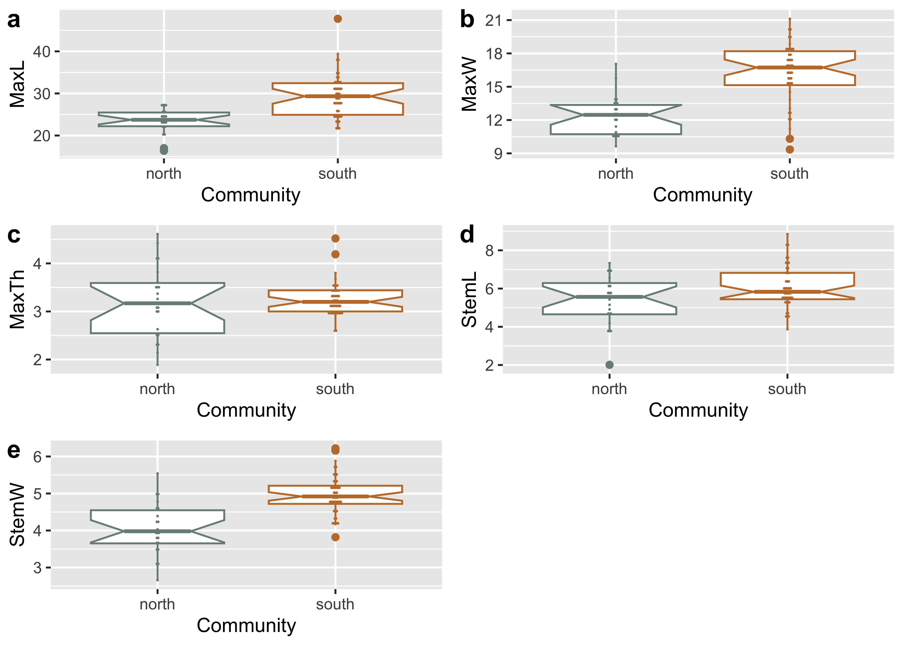

# read datadata <-read.csv("qdata.csv", header =TRUE, as.is=TRUE)# define variablesmaxl <- data$maxl # maximum lengthmaxw <- data$maxw # maximum widthmaxth <- data$maxth # maximum thicknessmaxstl <- data$maxstl # maximum stem lengthmaxstw <- data$maxstw # maximum stem widthreg <- data$region # region# print tableknitr::kable((data), 'pipe')
spec
site
region
maxl
maxw
maxth
maxstl
maxstw
554
41cp12
north
25.40
12.18
3.82
5.75
3.84
555
41cp12
north
22.92
12.87
3.54
3.71
3.69
556
41cp12
north
24.09
11.87
3.61
5.15
4.78
559
41cp12
north
25.01
10.57
3.50
5.84
3.88
562
41cp12
north
22.10
10.45
3.47
3.77
3.43
565
41cp12
north
20.31
10.53
3.08
2.01
3.07
591
41cp12
north
25.49
13.37
4.42
7.04
4.95
646
41cp5
north
16.37
10.46
2.63
3.85
4.03
649
41cp5
north
23.38
13.88
4.11
7.33
5.54
651
41cp5
north
22.86
13.84
4.61
6.16
5.02
652
41cp5
north
22.51
12.67
3.37
6.33
4.39
653
41cp5
north
27.55
17.05
3.08
6.83
4.60
654
41cp5
north
17.01
10.90
2.35
4.64
3.64
655
41cp5
north
26.86
13.06
2.50
6.10
3.99
656
41cp5
north
25.79
12.52
2.96
5.43
3.97
657
41cp5
north
27.36
12.41
3.04
6.56
4.26
659
41cp5
north
23.10
11.42
2.14
4.74
4.21
660
41cp5
north
20.23
9.64
1.89
5.70
2.66
661
41cp5
north
21.73
10.67
2.27
4.91
3.13
665
41cp12
north
27.34
15.77
4.10
4.69
4.60
677
41cp20
north
24.72
13.70
2.52
6.98
3.76
678
41cp20
north
24.98
13.33
3.26
4.19
3.54
na49-1
41na49
south
47.74
15.14
4.52
6.82
6.22
na49-10
41na49
south
22.88
12.13
3.68
5.73
5.49
na49-11
41na49
south
24.09
12.52
3.27
5.36
4.81
na49-12
41na49
south
21.41
10.31
3.48
4.64
3.82
na49-13
41na49
south
24.84
11.21
3.51
5.19
4.97
na49-14
41na49
south
21.92
9.35
2.62
5.22
4.85
na49-2
41na49
south
32.49
12.78
3.80
6.80
4.78
na49-3
41na49
south
27.72
13.05
4.19
5.99
5.88
na49-4
41na49
south
26.20
10.60
3.30
4.67
4.92
na49-7
41na49
south
24.25
12.01
2.92
6.01
4.93
na49-8
41na49
south
22.06
14.51
2.92
5.67
5.17
na49-9
41na49
south
25.44
13.86
3.44
4.74
4.81
f2-g2-5
41sy27
south
24.92
16.16
3.57
4.44
4.25
f2-g2-10
41sy27
south
34.69
16.40
3.29
6.12
4.14
f2-g2-15
41sy27
south
34.17
20.00
3.09
8.34
5.68
f2-g2-9
41sy27
south
39.39
16.73
2.95
6.28
4.90
f2-g2-14
41sy27
south
30.36
15.72
2.58
6.11
4.51
f2-g2-2
41sy27
south
29.32
15.47
2.94
5.59
4.18
f2-g2-1
41sy27
south
30.83
16.80
2.96
5.83
5.21
f2-g2-11
41sy27
south
31.10
15.33
2.92
5.60
4.78
f2-g2-3
41sy27
south
23.30
15.31
3.09
3.87
4.31
f2-g2-13
41sy27
south
29.33
18.59
3.13
5.54
4.52
f2-g2-7
41sy27
south
24.78
15.68
3.20
4.60
4.23
f2-g2-8
41sy27
south
28.17
18.24
3.01
5.99
4.72
f2-g2-12
41sy27
south
33.53
15.83
3.18
5.55
4.23
f2-g2-6
41sy27
south
23.74
16.12
2.92
5.53
4.34
f2-g1-20
41sy27
south
37.46
16.78
3.28
7.53
5.54
f2-g1-10
41sy27
south
27.32
18.39
3.10
5.37
4.54
f2-g1-19
41sy27
south
31.44
19.62
3.13
5.44
5.75
f2-g1-17
41sy27
south
32.75
19.34
3.34
6.29
5.31
f2-g1-16
41sy27
south
34.97
16.81
3.39
5.90
5.49
f2-g1-11
41sy27
south
33.18
17.45
3.36
6.47
5.12
f2-g1-13
41sy27
south
31.61
18.57
3.07
5.75
5.04
f2-g1-15
41sy27
south
38.50
20.34
3.40
8.85
6.16
f2-g1-18
41sy27
south
30.02
17.33
3.21
7.05
5.18
f2-g1-3
41sy27
south
29.45
18.84
3.16
5.58
5.32
f2-g1-7
41sy27
south
32.44
18.20
3.28
5.80
4.76
f2-g1-4
41sy27
south
28.33
17.49
2.98
7.29
4.83
f2-g1-12
41sy27
south
32.17
18.47
3.47
5.44
5.20
f2-g1-8
41sy27
south
31.03
17.05
3.10
7.41
5.11
f2-g1-9
41sy27
south
27.56
21.12
3.47
6.84
5.07
f2-g3-1
41sy27
south
27.21
17.41
3.52
7.70
5.35
f2-g3-3
41sy27
south
24.31
16.35
3.00
7.08
5.10
f2-g3-6
41sy27
south
30.58
18.03
3.56
7.37
4.81
f2-g3-2
41sy27
south
27.63
17.74
2.99
8.23
4.82
Boxplots for variable by region
# boxplot of maximum length ~ regionregionmaxl <-ggplot(data, aes(x = region, y = maxl, color = region)) +geom_boxplot(notch =TRUE) +geom_dotplot(binaxis ='y',stackdir ='center',dotsize =0.3) +scale_colour_manual(values =wes_palette("Moonrise2")) +theme(legend.position ="none") +labs(x ='Community', y ='MaxL')# boxplot of maximum width ~ regionregionmaxw <-ggplot(data, aes(x = region, y = maxw, color = region)) +geom_boxplot(notch =TRUE) +geom_dotplot(binaxis ='y',stackdir ='center',dotsize =0.3) +scale_colour_manual(values =wes_palette("Moonrise2")) +theme(legend.position ="none") +labs(x ='Community', y ='MaxW')# boxplot of maximum thickness ~ regionregionmaxth <-ggplot(data, aes(x = region, y = maxth, color = region)) +geom_boxplot(notch =TRUE) +geom_dotplot(binaxis ='y',stackdir ='center',dotsize =0.3) +scale_colour_manual(values =wes_palette("Moonrise2")) +theme(legend.position ="none") +labs(x ='Community', y ='MaxTh')# boxplot of stem length ~ regionregionmaxstl <-ggplot(data, aes(x = region, y = maxstl, color = region)) +geom_boxplot(notch =TRUE) +geom_dotplot(binaxis ='y',stackdir ='center',dotsize =0.3) +scale_colour_manual(values =wes_palette("Moonrise2")) +theme(legend.position ="none") +labs(x ='Community', y ='StemL')# boxplot of stem width ~ regionregionmaxstw <-ggplot(data, aes(x = region, y = maxstw, color = region)) +geom_boxplot(notch =TRUE) +geom_dotplot(binaxis ='y', stackdir ='center', dotsize =0.3) +scale_colour_manual(values =wes_palette("Moonrise2")) +theme(legend.position ="none") +labs(x ='Community', y ='StemW')# render figureregionfigure <-ggarrange(regionmaxl, regionmaxw, regionmaxth, regionmaxstl, regionmaxstw,labels =c("a","b","c","d","e"),ncol =2, nrow =3)
Bin width defaults to 1/30 of the range of the data. Pick better value with
`binwidth`.
Bin width defaults to 1/30 of the range of the data. Pick better value with
`binwidth`.
Bin width defaults to 1/30 of the range of the data. Pick better value with
`binwidth`.
Bin width defaults to 1/30 of the range of the data. Pick better value with
`binwidth`.
Bin width defaults to 1/30 of the range of the data. Pick better value with
`binwidth`.
## plot figureregionfigure

Boxplots for maximum length, width, thickness, stem length, and stem width for Perdiz arrow points recovered from the northern and southern behavioral regions.